Lecture 17: Depth-First Search#
The DFS Algorithm#
Definition 45 (Depth-First Search (graph))
Input: A graph \(G=(V,E)\) and a starting vertex “\(root\)”
Body: Build a tree \(T\)
Initialize a graph \(T\) with no edges and only the vertex \(root\)
Do visit\((root)\) (i.e. apply procedure below)
visit(\(v\)):
Input: \(v\) (a vertex in \(G\))
Body: For each \(\{v,w\}\in E\):
If \(w\) not in \(T\),
add \(w\) and \(\{v,w\}\) to \(T\)
visit(\(w\))
Output: A tree \(T\) from \(G\)
DFS works by repeating the function visit()
Let’s go through an example together using the following graph:

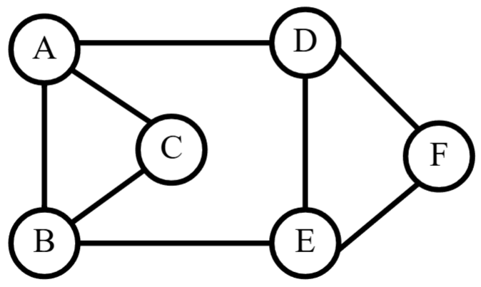
We will use \(A\) as the root vertex and begin our initilization of \(T\):

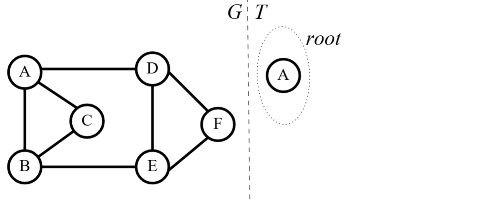
We start with visit(\(A\)):

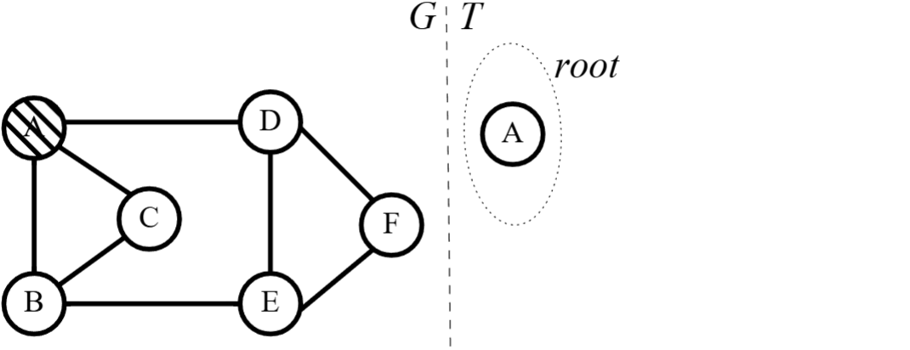
The first step of visit(\(A\)) dictates we visit each edge of \(A\). Starting with \(\{A,B\}\):

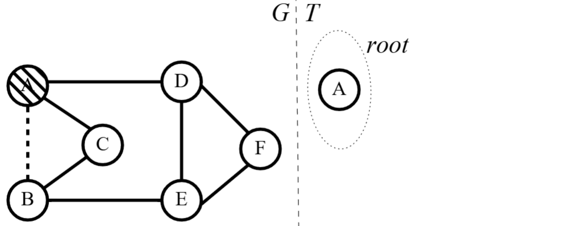
Since \(B\) is not in \(T\) yet, we add \(B\) and the edge \(\{A,B\}\) to \(T\):

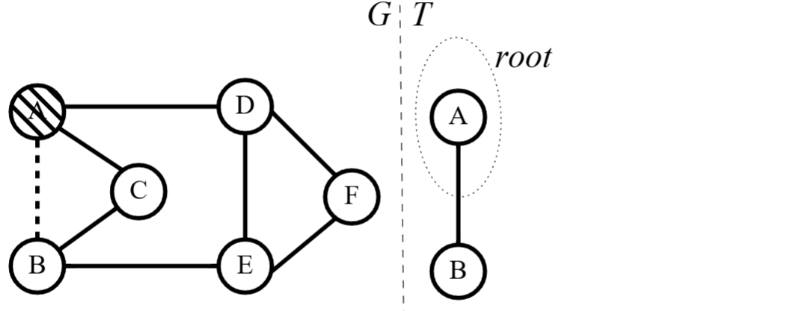
Now that we’ve added \(B\), we have to start visit(\(B\)). Note that we are not done with visit(\(A\)). We are simply starting visit(\(B\)).

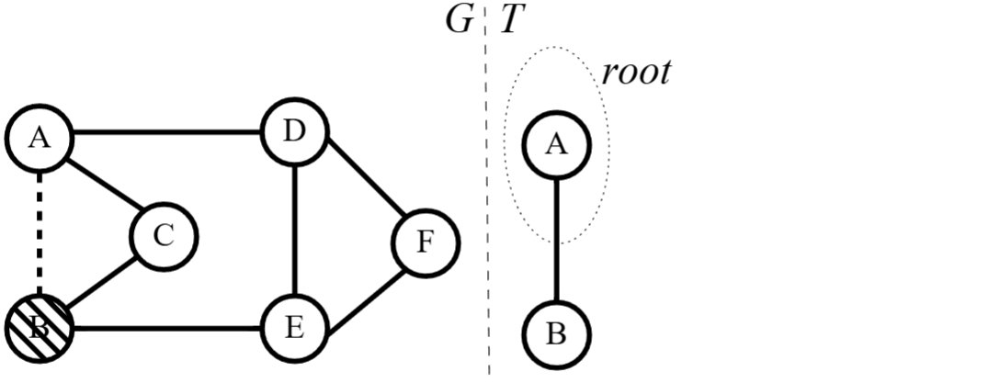
We consider the edge \(\{B,A\}\), but \(A\) is already in \(T\) so we ignore it. We consider the edge \(\{B,C\}\):

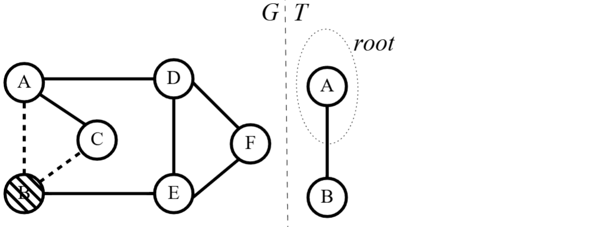
Since \(C\) is not in \(T\), we add \(C\) and the edge \(\{B,C\}\) to \(T\). Again, when we add this new vertex, we start visit() on it. So, we start visit(\(C\)):

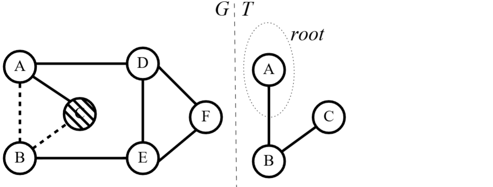
We consider the edge \(\{C,A\}\), but \(A\) is already in \(T\) so we ignore it. Likewise, we consider \(\{C,B\}\), but \(B\) is already in \(T\) so we ignore it. Now, we have finished visit(\(C\))! We go back to \(B\) to finish visit(\(B\)):

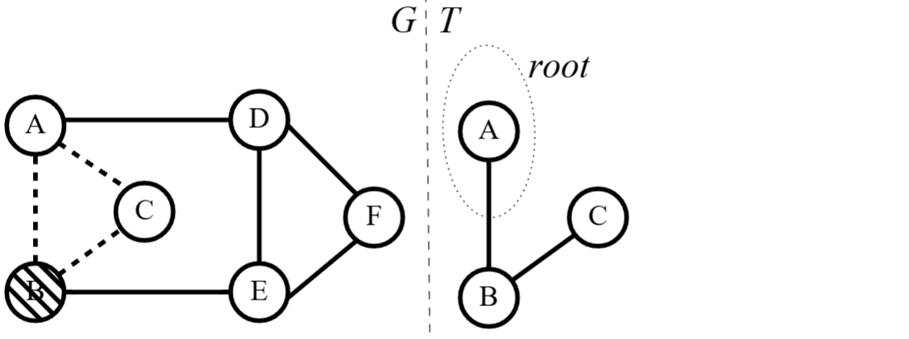
The last edge we need to consider for \(B\) is \(\{B,E\}\). \(E\) is not in \(T\), so we add \(E\) and \(\{B,E\}\) to \(T\) and proceed with visit(\(E\)):

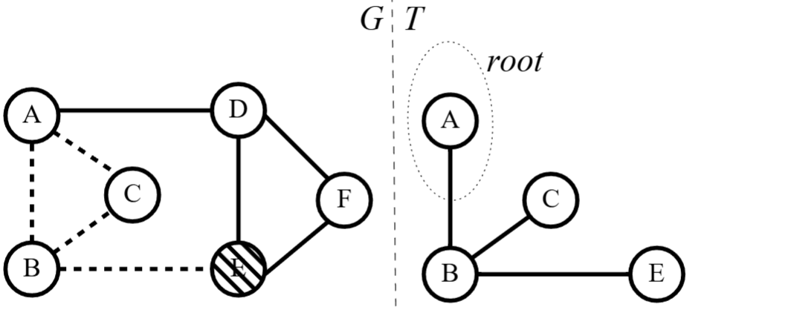
We consider \(\{E,B\}\), but \(B\) is in \(T\) so we ignore it. We consider \(\{E,D\}\), notice its not in \(T\), and repeat the process:

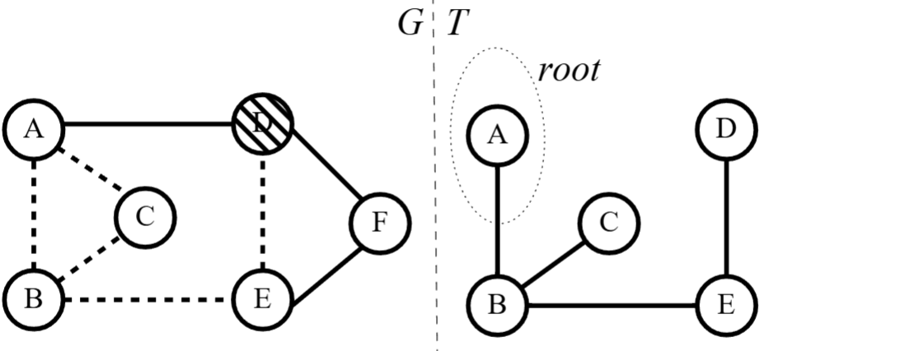
\(A\) and \(E\) are in \(T\), so we ignore them. But, \(F\) is not, so we repeat with \(F\). We notice both edges for \(F\) are shared with vertices already in \(T\), so we do nothing:

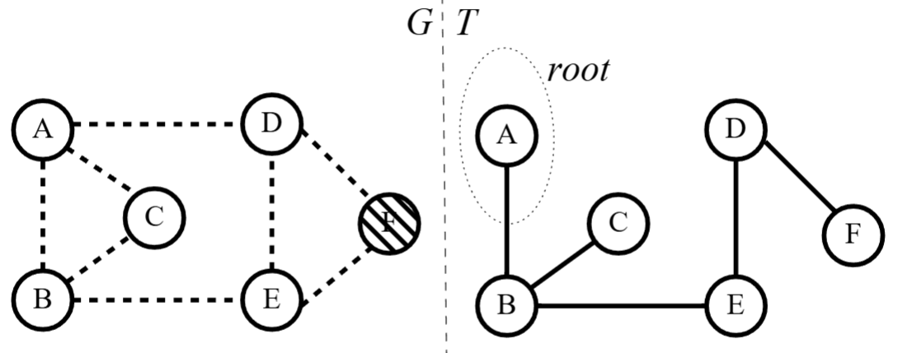
Now that each vertex is in \(T\), we know we are done! The output of DFS for this graph is:

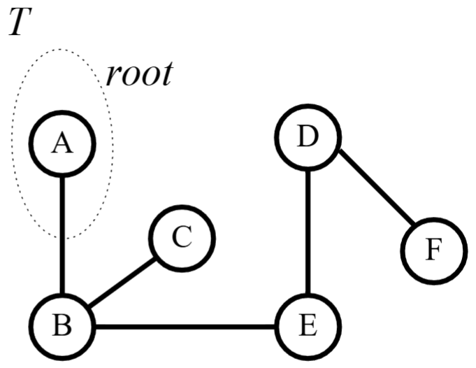
Again, notice that the output for this algorithm is a tree just like BFS. Also, we inputted a connected graph that resulted in a spanning tree just like BFS. So, one interesting question:
Question 32
When do BFS and DFS produce different trees?
For example, our previous graph ends up with two different trees:

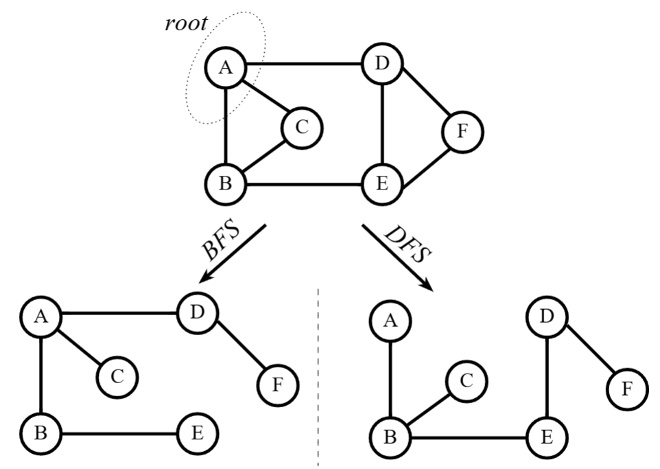
Generating a Spanning Tree#
Theorem 28
Inputting a connected graph into DFS produces a spanning tree.
Proof. Let \(G=(V,E)\) be a connected graph inputted into DFS (graph) algorithm above with \(T\) being its output. We want to show that:
\(T\) is spanning (has all the vertices of \(G\))
\(T\) is connected (has a path between every pair of distinct vertices)
\(T\) has no cycles (has no paths that start and end at the same vertex)
Spanning: Assume not. That is, let some set \(U\subseteq V\) be vertices that are not added to \(T\) but are in \(G\). Since \(G\) is connected, there is at least one edge in \(G\) between some vertex in \(U\) and some vertex not in \(U\) (otherwise there would be no path between vertices in \(U\) to the rest of the graph). Let \(x\in U\) and \(y\notin U\) be such that \(\{x,y\}\in E\).
Since \(y\notin U\), \(y\) must have been added to \(T\) via visit(\(y\)). By applying visit() to \(y\), the edge \(\{x,y\}\) was considered, visit() noticed the vertex \(x\) was not in \(T\), and so \(x\) would be added to \(T\). This contradicts \(x\) being in the set of unadded vertices \(U\). So, \(U\) must be empty such that \(T\) is spanning for \(G\).
Connected: Try it yourself! (Similar to BFS proof)
No Cycles: Note that DFS adds vertices to \(T\) one by one. Also not that when adding edges to \(T\), we only add an edge between a new vertex and a vertex already in \(T\). So, the only way to create a cycle is for the new vertex to be added such that it shares an edge between two vertices already in \(T\).
If the new vertex \(x\) shared an edge in \(G\) with two vertices \(y\) and \(z\) who are already in \(T\), either \(y\) or \(z\) must have been visited first and \(x\) added to \(T\) (by visit(\(y\)) or visit(\(z\))). By the time the other vertex was visited, \(x\) is already in \(T\) and no edge would be added. So, \(x\) cannot share an edge with both \(y\) and \(z\). So, \(T\) has no cycles.
Therefore, \(T\) is spanning, connected (left to you to prove), and has no cycles. Thus, \(T\) is a spanning tree of \(G\).
Question 33
We have proven theorems that say connected graphs result in spanning tree for BFS and DFS. If we convert BFS (graph) and DFS (graph) to be about digraph/weighted graphs/weighted digraphs/etc., how would these theorems change?